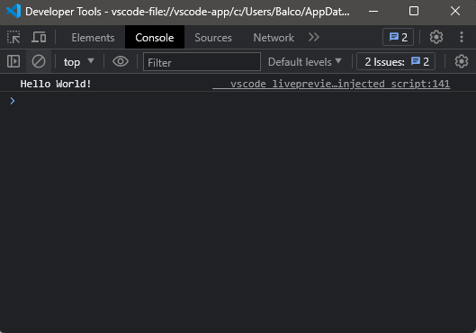

As with all programming languages, the first task is to make a simple program that prints "Hello World!" to ensure everything works.
To include JavaScript code, put it inside a script tag. JavaScript code can be inserted almost anywhere into an HTML, and it will automatically executed when the browser processes the tag.
There are several ways to make a "Hello World!" program; the most straightforward is using the console.log() function. This function won't display directly to the user but to the console. Anyway, it is sufficient to make our first web page which runs JavaScript.
The following paragraph is a copy of the code inserted in the HTML file, which won't be visible directly in the web page rendering.
<script> console.log('Hello World!'); </script>
To view the output, open the Developer Tools Panel (usually with the F12 key) and select Console. You should see the output "Hello World!".
